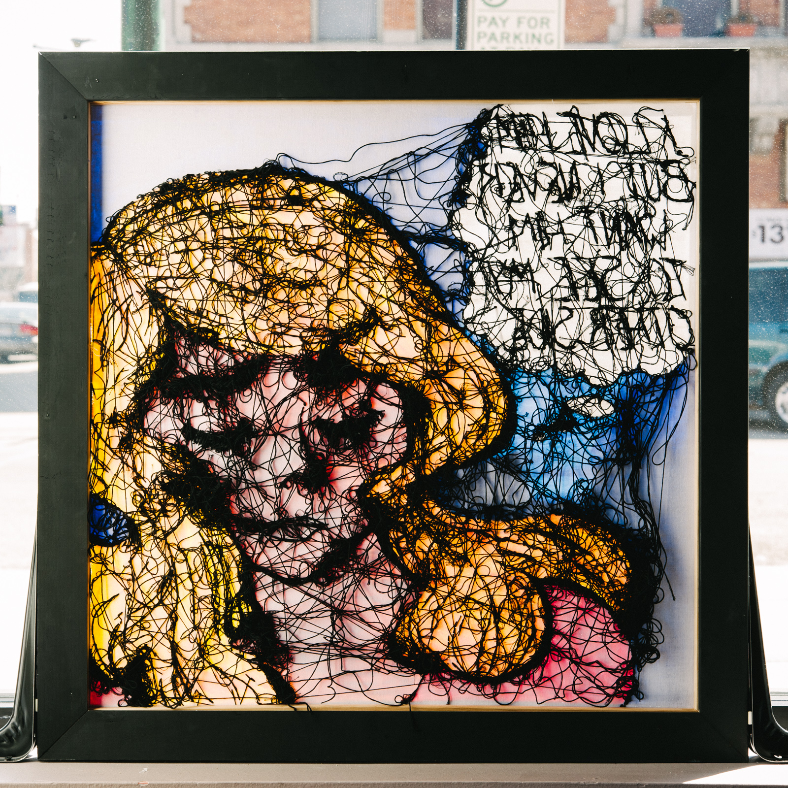

Camille Canales
Branch Tree Embroidery
Embroidery on Cotten Sateen
2014
Camille Canales was born and raised in Kingsville, Texas. In 2007 she received her BFA from SAIC with an emphasis in painting and drawing and fiber and material studies. Since 2008 she has been involved with Lillstreet, a local arts center, wearing multiple hats within the community: artist, educator, and arts administrator. Camille makes work that investigates time, material, and the everyday. She creates image-based objects that explore her own coded personal narratives.
Lindsay Evans
Other Side
Acrylic paint and emrboidery floss on stretched cotton fabric
2012
Lindsay Evans is an artistic jack of all trades from Pennsylvania. Her favorite things to do are to try out new crafts, bake coffee cakes, and take naps with her animals.

Lindsay Evans
Other Side
Acrylic paint and emrboidery floss on stretched cotton fabric
2012
Lindsay Evans is an artistic jack of all trades from Pennsylvania. Her favorite things to do are to try out new crafts, bake coffee cakes, and take naps with her animals.
Noelle Garcia
Native Tools: Beer - 2012 - Felt, glass beads, thread
Nilla Wafers - 2014- Felt, glass beads, nymo
Painter's Tools: Heavy Duty Stapler - 2011 - Glass beads, thread on stapler
Noelle Garcia is a multimedia artist grappling with ideas of identity, family relationships and the American Indian experience. In addition to traditional painting, she works in fiber media including bead work, soft sculpture and basketry. Born in Reno, Nevada she now resides and works in the Chicago area. She earned her Bachelor's of Fine Arts in Painting & Drawing from the School of the Art Institute of Chicago and her Master's of Fine Arts in from the University of Nevada Las Vegas.
Camille Canales
Branch Tree Embroidery
Embroidery on Cotten Sateen
2014
Camille Canales was born and raised in Kingsville, Texas. In 2007 she received her BFA from SAIC with an emphasis in painting and drawing and fiber and material studies. Since 2008 she has been involved with Lillstreet, a local arts center, wearing multiple hats within the community: artist, educator, and arts administrator. Camille makes work that investigates time, material, and the everyday. She creates image-based objects that explore her own coded personal narratives.
Ashely Gilreath
Mornings in Florence
Sterling Silver, pearls, book cover
2013
Ashley Gilreath is a metalsmith/enamelist who can't resist buying dusty old books; preferably with water marks and inscriptions on the inside cover. Her conceptual artwork explores family relationships and can be described as artifacts of genealogical history. She views her jewelry as abbreviations or small studies of her observations and ideologies regarding ancestry. She has a B.F.A. in Metal Design from East Carolina University, and is currently living and making art in New Jersey.
Ashely Gilreath
Simpson and Simpson
Copper Sterling silver, book cover
2013
Ashley Gilreath is a metalsmith/enamelist who can't resist buying dusty old books; preferably with water marks and inscriptions on the inside cover. Her conceptual artwork explores family relationships and can be described as artifacts of genealogical history. She views her jewelry as abbreviations or small studies of her observations and ideologies regarding ancestry. She has a B.F.A. in Metal Design from East Carolina University, and is currently living and making art in New Jersey.
Jasmine Guerrero
Album - 2008 - Nedle lace on cotton
Diary - 2007 - Drawnwork on cotton
2013
Jasmin Elisa Guerrero is a fiber artist currently living and working in New York City. She received her BFA from UMass Dartmouth and is a member of the Casualiving collective.
Jessica Pleyel
Mending Ways: Horse, Colic
Horse skull, acrylic/wool blend yarn.
2013
Jessica Pleyel is a conceptual artist and curator located in Grand Rapids, Michigan. Her studio practice is multi-faceted, and includes sculpture, costume design, performance, video, and playwriting. Major themes within her practice encompass familial relations, feminism, gender identity, and the performative nature hunting.
Jeff Rhodes
Cross with BLock 3 After M. Barney (with Frame After A. Albers)
Cotton duck with polyester thread, oak with wood filler, four panels.
2014
Jeff Rhodes is an artist based in Skokie, Illinois. He received a BFA from the University of Illinois and an MA in Arts Administration from the School of the Art Institute of Chicago.span>
Molly Roth
Something for Something
Satin and organza ribbon, latex paint, lettering enamel on dyed muslin.
2014
Molly Roth mines text and context, sentimentality, estrangement, and the quotidian as fodder to create works that are both beautiful and awkward. Through accumulation and careful consideration, Roth converts banal words and materials into decorative, self-describing statements on anxiety, nostalgia, value, and control. Her labor-intensive, text-based works vary from large-scale installations to paintings to small collage/drawings on newspaper and chipboard. Often disguising the written word inside of itself, she adorns it with obsessive decoration or covers it up with common materials. Molly lives and works in Chicago, Illinois.
Emily Schneider
Inverse Cartography
Silk organza, archival in gel medium
2013-2014
Emily Scheider is a printmaker and fibers artist based in Milwaukee who has exhibited her work throughout Chicago and Southeastern Wisconsin. In her mixed-media compositions, she aims to explore the connections between urban environments, the materials they are constructed with, and the relics they leave behind.
Carrie Ann Schumacher
Emil and La Vie En Rose
Romance Novels
2013
Carrie Ann Schumacher is a multi-media artist living and working in Chicago. Her B.F.A. in Digital Media was received from Elmhurst College in 2008. Subsequent to that she attended Northern Illinois University, where she received her M.F.A. in Painting in 2012. She is currently on the faculty at Kishwaukee College, where she teaches Computer Art, Adobe Illustrator, and Digital Imaging.